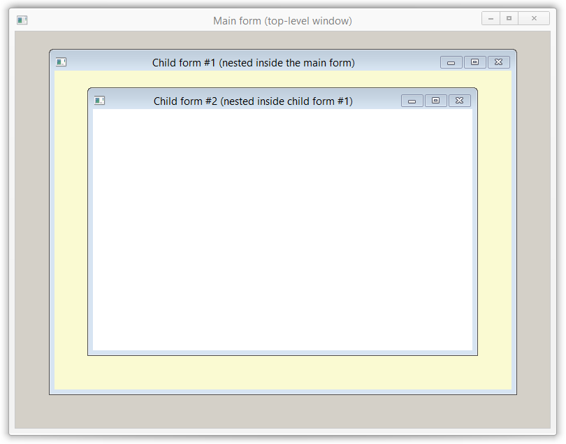

Class nana::form
The class nana::form is one of the two widget classes in the root category (the other being nana::nested_form). It is the only widget class that wraps a top-level (non-child) OS native window, and can be used as the main application window, or as a dialog box (modal or modeless).
Like all Nana classes that wrap system resources, nana::form makes available the native handle of the resource it wraps (OS native window). That means that platform-specific code can be used to manipulate or otherwise interact with the wrapped native window (although it is usually not necessary to do so, since the library provides extensive functionality).
Events
In addition to the general events that all widgets support, a form also has the specialized event basic_event<arg_unload> unload;, which triggers when the form is about to close. The structure arg_unload (derived from nana::event_arg) defines the following data members:
| Data member | Type | Description |
|---|---|---|
| window_handle | nana::window | a handle to the form widget that is the event target |
| cancel | bool | this flag can be set to true to cancel the closing of the form |
form_base
The class nana::drawerbase::form::form_base (derived from nana::widget_object<root_tag, ...>) is the base class of nana::form and nana::nested_form. It encapsulates a nana::place object (for managing the layout of child widgets in the form window), along with a few methods that provide access to the place object. This internal place object is only provided for convenience, to avoid the need for a user-owned object (one can still be used instead, if desired).
The class defines the following member functions:
| collocate | calls the collocate method of the place object |
This method is provided for convenience, to avoid the need to explicitly call |
|
| div | calls the div method of the place object |
This method is provided for convenience, to avoid the need to explicitly call |
|
| get_place | returns a reference to the place object |
Return valueA reference to the internal |
|
| operator[] | calls the operator[] method of the place object |
This method is provided for convenience, to avoid the need to explicitly call |
Member functions
In addition to the methods inherited from nana::widget, nana::widget_object<root_tag, ...>, and form_base (documented above), the class nana::form defines the following methods:
| (constructors) | construct a nana::form instance |
|||||||
Root window widgets don't have a create method like other categories of widgets. When a root window widget is constructed, the window is created immediately, even when the default constructor is used. Parameters
|
||||||||
| modality | shows the form and makes it a modal window | |||||||
This method shows the form, and if it has an owner, makes it a modal window (meaning the user can't interact with the owner form until this form is closed). |
||||||||
| wait_for_this | blocks execution until the form is closed | |||||||
This method blocks the calling routine, returning only when the form is closed. The event loop continues to work, allowing the user to interact with the form. |
Class nana::nested_form
The class nana::nested_form is very similar to nana::form (both are derived from form_base), the only difference being that nested_form wraps an OS child window, instead of a top-level window. A child window (or "subwindow" on X11) is confined to the area of the parent window, being clipped to that area when moved.
This class doesn't have any member functions, other than the following constructors:
Parameters
|
Usage details and examples
Controlling native window properties
In order to set the appearance properties of the native window that a nana::form or nana::nested_form object wraps, a nana::appearance structure must be passed to a constructor. For example, a call to a constructor might look like this:
form fm {rectangle{0, 0, 543, 345}, appearance{true, true, false, false, true, true, true}};That's not very readable or easy to write, so the library provides three helper class templates that generate an appearance object: nana::appear::decorate, nana::appear::bald, and nana::appear::optional. Each of these classes provides a cast operator that returns a nana::appearance with predefined values.
The class template nana::appear::decorate is used when creating a window with a title bar (the term "decorate" refers to window decoration), that has a button in the task bar. The following template arguments can be used when instantiating it:
| Template argument | Description |
|---|---|
| appear::floating | the window is a topmost window, which always stays on top of non-topmost windows |
| appear::no_activate | the window is not automatically activated after being created (is not given input focus) |
| appear::minimize | the window has a "minimize" button |
| appear::maximize | the window has a "maximize" button |
| appear::sizable | the window has a border that allows the user to resize it (omission results in a non-sizing border) |
For example, the following code creates a resizable window with a "minimize" button (the "close" button is always implicit and doesn't need specifying):
form fm {rectangle{0, 0, 543, 345}, appear::decorate<appear::sizable, appear::minimize>{}};An important feature of these templates is that the number of arguments and their order is not fixed (any number of arguments can be passed to a template in any order). For appear::decorate, omitting all arguments (leaving all template parameters to be initialized with a default value) results in a window with a non-sizing border and only the close button:
form fm {rectangle{0, 0, 543, 345}, appear::decorate{}};The class template nana::appear::bald is used when creating a window without a title bar, that optionally has a button in the task bar, and optionally has a sizing border (as opposed to no border at all). The following template arguments can be used when instantiating it:
| Template argument | Description |
|---|---|
| appear::taskbar | the window has a button in the taskbar (omission results in no button in the taskbar) |
| appear::floating | the window is a topmost window, which always stays on top of non-topmost windows |
| appear::no_activate | the window is not automatically activated after being created (is not given input focus) |
| appear::sizable | the window has a border that allows the user to resize it (omission results in no border at all) |
For example, the following code creates a window without title bar, but with a sizing border and a button in the taskbar:
form fm {rectangle{0, 0, 543, 345}, appear::bald<appear::sizable, appear::taskbar>{}};Omitting all template arguments (leaving all template parameters to be initialized with a default value) results in a borderless window without a taskbar button:
form fm {rectangle{0, 0, 543, 345}, appear::bald{}};The class template nana::appear::optional creates a window with or without a title bar, depending on the bool template parameter. If the bool parameter is true, the window has a title bar. In that case, the minimize and maximize buttons are present if appear::taskbar is used, otherwise the window only has the close button. The following template arguments can be used when instantiating it:
| Template argument | Description |
|---|---|
| appear::taskbar | the window has a button in the taskbar |
| appear::floating | the window is a topmost window, which always stays on top of non-topmost windows |
| appear::no_activate | the window is not automatically activated after being created (is not given input focus) |
| appear::sizable | the window has a border that allows the user to resize it |
For example, the following code creates a resizable window with a button in the task bar, and all system buttons:
form fm {rectangle{0, 0, 543, 345}, appear::optional<true, appear::taskbar, appear::sizable>{}};To create a window without title bar, pass false to the bool parameter:
form fm {rectangle{0, 0, 543, 345}, appear::optional<false, appear::taskbar, appear::sizable>{}};And finally, it should be noted that the library provides a helper function in the API namespace, that returns a rectangle that's centered on the screen. For example, the following code creates a 543x345 window centered on the screen:
form fm {API::make_center(543, 345), appear::optional<true, appear::taskbar, appear::sizable>{}};Nested form example
#include <nana/gui.hpp>
int main()
{
using namespace nana;
form fm {API::make_center(765, 567)};
fm.caption("Main form (top-level window)");
nested_form nfm1 {fm, API::make_center(fm, 654, 456)},
nfm2 {nfm1, API::make_center(nfm1, 543, 345)};
nfm1.caption("Child form #1 (nested inside the main form)");
nfm2.caption("Child form #2 (nested inside child form #1)");
nfm1.bgcolor(colors::light_goldenrod_yellow);
nfm2.bgcolor(colors::white);
nfm1.show();
nfm2.show();
fm.show();
nana::exec();
}Modal and modeless forms
A nana::form window can behave as a modal window when it is owned by another nana::form (an owner can be designated when the object is constructed). To make an owned form modal, the method form::modality must be called, as shown in this example:
#include <nana/gui.hpp>
#include <nana/gui/widgets/button.hpp>
int main()
{
using namespace nana;
form fm {API::make_center(543, 345)};
fm.caption("Main form");
fm.div("vert margin=15 <> <buttons weight=30 gap=15> <>");
button btn1 {fm, "Open modal form"}, btn2 {fm, "Open modeless form"};
fm["buttons"] << btn1 << btn2;
btn1.events().click([&]
{
form modfm {fm};
modfm.caption("Modal form");
// `modfm.modality()` returns only when the window of `modfm` closes, preventing
// `modfm` from going out of scope before the its window is closed by the user
modfm.modality();
});
btn2.events().click([&]
{
// the form object below can't be constructed on the stack, because it would
// immediately go out of scope and be destructed; instead, the helper class
// `form_loader` is used to dynamically allocate a `form` object that is managed
// by the library, and is automatically deallocated when the form window closes
auto &newfm {form_loader<form>{}(API::make_center(321, 123))};
newfm.caption("Modeless form");
newfm.show();
});
fm.collocate();
fm.show();
nana::exec();
}